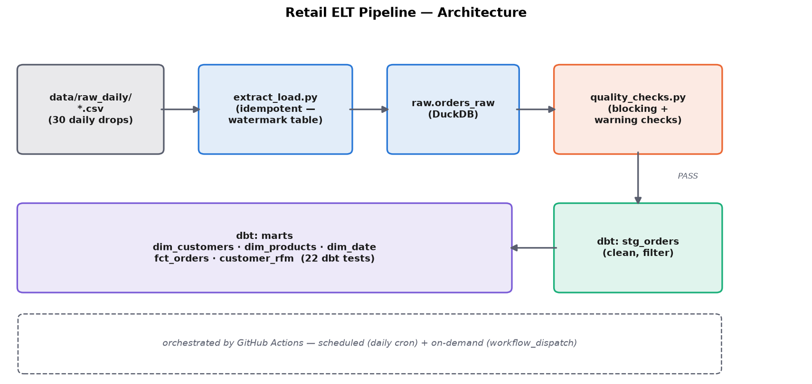

The numbers
Why this exists
A Data Analyst/Scientist workflow assumes the data is already clean and sitting in a table somewhere. A Data Engineer's job is making that true in the first place — reliably, on a schedule, without a human re-running anything by hand. This project is deliberately scoped to just that: extract/load, data quality gating, warehouse modeling, and orchestration, kept separate from any ML/analysis work. Same underlying dataset as Project 1, rebuilt end to end as an engineering exercise instead of an analytical one.
Architecture

- Source —
data/raw_daily/*.csv, 30 daily files simulating one day's new-orders export each. - Extract + load — loads each file into
raw.orders_rawin a DuckDB warehouse, tracking progress in araw._pipeline_statecontrol table so re-running never duplicates data. - Data quality gate — blocking checks (schema, null identifiers, empty batches, misfiled dates) vs. warning checks (expected messiness like missing CustomerIDs) — deliberately not one undifferentiated list.
- Transform — dbt staging model applies the actual cleaning rules; a marts layer builds a star schema plus an RFM feature mart, covered by 22 dbt tests.
- Orchestration — GitHub Actions, scheduled + on-demand, fails the job on any blocking failure.
A deliberate non-decision: no live external data source
Data quality: blocking vs. warning, on purpose
Every check could have been written as a hard failure. That would have been wrong — a chunk of this dataset's real messiness (guest checkouts with no CustomerID, cancellations with negative quantity, a handful of genuinely repeated line items) is expected, not corruption, and a pipeline that halts on expected data isn't trustworthy either. Checked directly before writing the checks, not assumed:
| Check | Type | Result on real data |
|---|---|---|
| Schema / expected columns & types | Blocking | PASS |
| Null InvoiceNo / StockCode / InvoiceDate | Blocking | PASS (0 nulls) |
| Empty batch | Blocking | PASS |
| Row lands in correct day's batch | Blocking | PASS |
| Missing CustomerID rate | Warning | 37.5% — guest checkouts, filtered downstream |
| Negative Quantity rate | Warning | 1.9% — cancellations/returns, filtered downstream |
| Repeated (InvoiceNo, StockCode) pairs | Warning | 997 pairs — real, not deduplicated |
Verified, not assumed
- Idempotency — ran the pipeline twice: second run loaded 0 new batches, skipped all 30, row count unchanged at 58,345.
- The gate actually blocks bad data — injected a row with a null
InvoiceNointo a test batch; the gate failed with exit code 1 and named the exact problem, before being removed again. --reloadpath — force-reloaded a single batch; row and batch counts unchanged afterward.- dbt build — 5 models + 1 view, 22 tests,
PASS=28 WARN=0 ERROR=0. - CI — the GitHub Actions workflow runs the identical commands against a fresh checkout; real run history is public on the Actions tab, not a screenshot.
Warehouse model
stg_orders (view) applies the cleaning rules once;
dim_customers, dim_products, and
dim_date form the dimension layer;
fct_orders is the line-item fact table, foreign-keyed to
all three dims and tested for referential integrity; customer_rfm
computes the same Recency/Frequency/Monetary definition as
Project 1's notebook,
in SQL, in-warehouse — deliberately stops short of Project 1's
KMeans segmentation, since that's a modeling step that belongs with
sklearn in a notebook, not a SQL transform layer.